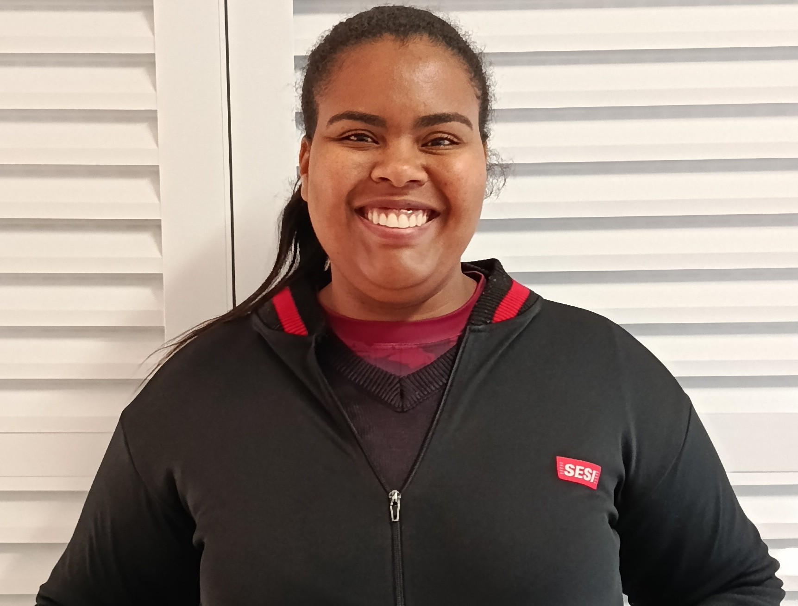

MULHERES —
Segurança
Fabiana
Fabiana atua há 17 anos como inspetora de alunos no SESI. Ex-aluna da instituição, começou ajudando as mulheres que trabalhavam na escola e, ao se identificar com a função, construiu sua trajetória profissional. Sua maior inspiração é ela mesma, e encontra satisfação em tudo o que faz no trabalho.

Desafio
Superar as dificuldades enfrentadas dentro de casa.
Significado de trabalhar com a educação
Considera um privilégio contribuir para o futuro das crianças e marcar suas vidas.
Importância da função
Contribuir para a organização e o bom funcionamento da escola, apoiando alunos e educadores.
Conquistas
Conquistar seu carro, sua casa e construir uma família.
Olhares que cuidam, presença que transforma
Fabiana se emociona ao acompanhar o crescimento dos alunos e até mesmo vê-los formando suas próprias famílias. Motiva-se pela evolução das crianças e destaca a importância do trabalho das inspetoras, que envolve atenção e cuidado constantes. Também valoriza o papel das mulheres na educação, especialmente pelo acolhimento e apoio oferecidos aos alunos.
Mensagem aos alunos
“Estudem, foquem, voem, corram atrás dos sonhos”Gabriela
Gabriela atua há 5 anos como inspetora no SESI. Iniciou sua trajetória como estagiária, passou pelo trabalho em berçário e, posteriormente, ingressou na instituição. Sua maior inspiração é sua mãe, que representa uma importante referência em sua vida.

Desafio
Cuidar do pai durante a pandemia, enfrentando um período difícil.
Significado de trabalhar com a educação
Considera uma atividade muito importante para o desenvolvimento dos alunos.
Importância da função
Cuidar dos alunos e garantir a segurança e a organização da escola.
Conquistas
Construir sua trajetória profissional desde que entrou no SESI.
Olhares que cuidam, presença que transforma
Gabriela se orgulha de acompanhar as conquistas dos alunos, como a aprovação de um estudante em uma faculdade no exterior. Motivada por seus sonhos, destaca a correria do trabalho e a importância de valorizar o papel das inspetoras na escola.
Mensagem aos alunos
“Estudem sempre.”Bárbara
Bárbara atua há 5 meses como inspetora no SESI. Ex-aluna da instituição, sempre teve carinho pela escola e iniciou sua trajetória profissional como cuidadora em Valinhos, até chegar à unidade de Vinhedo. Inspirada por sua mãe, gosta de estar perto dos alunos, dos professores e de toda a comunidade escolar.
Desafio
Manter-se sempre atenta e cuidar de todos os alunos.
Significado de trabalhar com a educação
Contribuir para a formação de pessoas melhores.
Importância da função
Cuidar dos alunos e garantir a segurança e a organização da escola.
Conquistas
Conquistar uma oportunidade de trabalho no SESI.
Olhares que cuidam, presença que transforma
Bárbara encontra na família, especialmente nos filhos e no lar, sua maior motivação. Destaca que o trabalho das inspetoras vai muito além de circular pela escola, envolvendo cuidado, atenção e apoio constante aos alunos.
Mensagem aos alunos
“Estudem, não desistam. A vida traz desconforto, mas isso é o que nos faz crescer.”